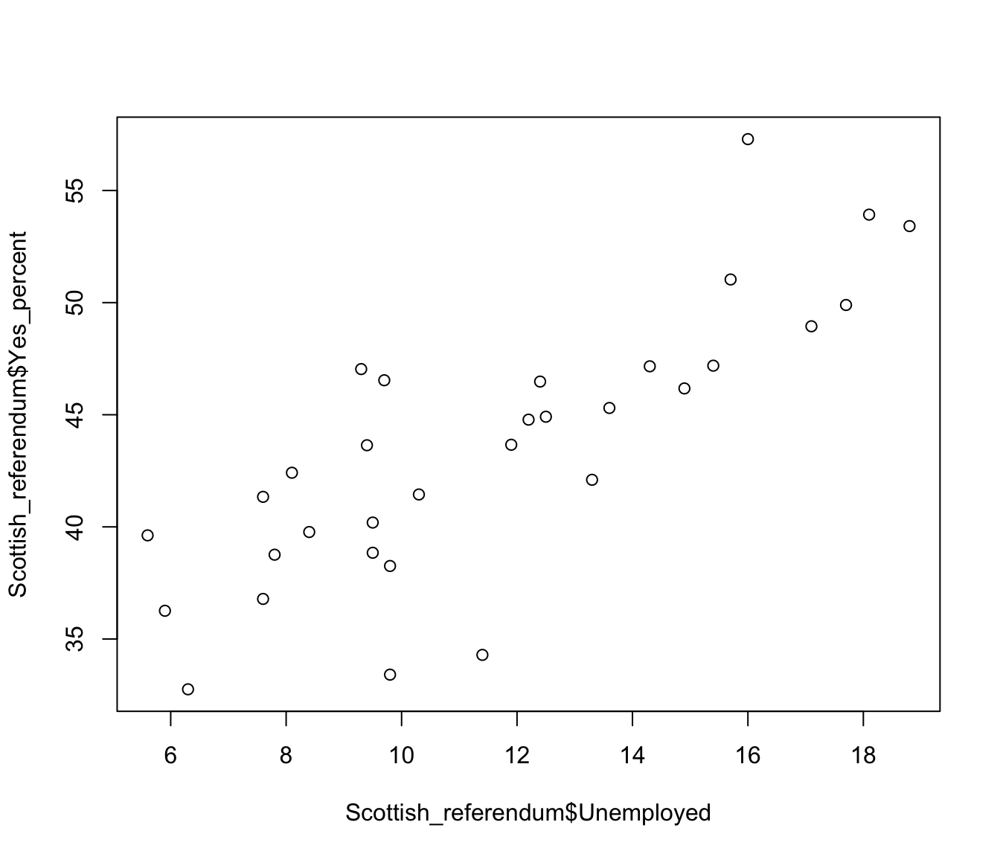
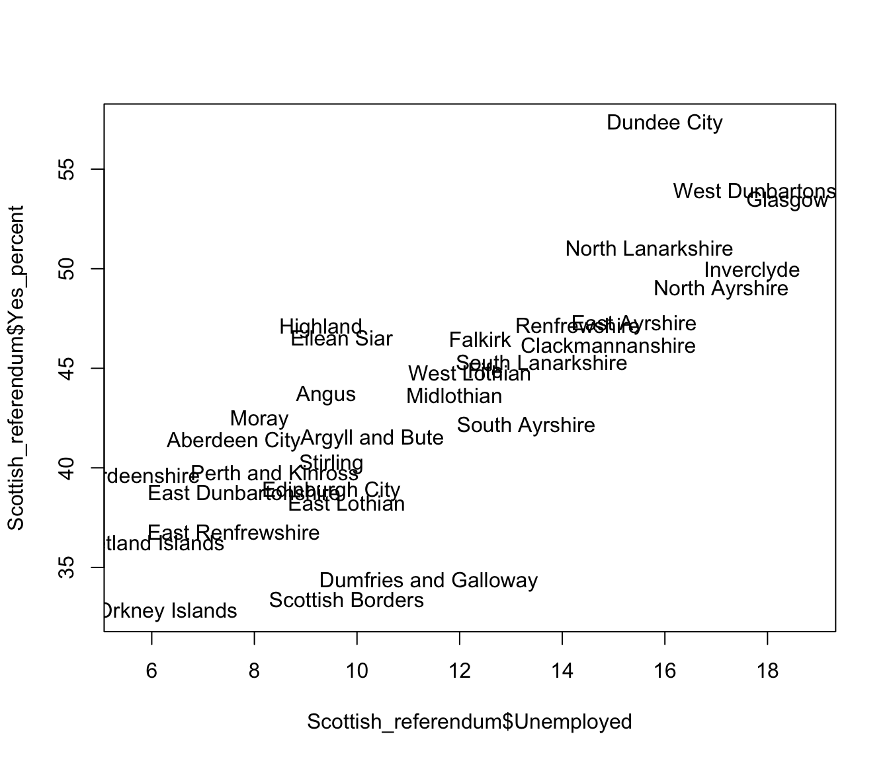

2.5 A further example: the Scottish independence referendum
Example: The Scottish Referendum on Independence
The results of the Scottish referendum on independence were of enormous interest to the UK. A research paper from the House of Commons Library reported the voting patterns separately by Council area, together with a variety of social and demographic characteristics. The data are available in theScottish_referendumdataframe in therpanelpackage. The information in this file is:
Councilthe Scottish council name Voted.nothe percentage of people who voted no Turnoutthe percentage of people who voted Populationthe number of people eligible to vote Unemployment.ratethe percentage unemployed Scottish.identity.onlythe percentage who identify themselves as Scottish only Aged.16the percentage who are 16 years of age Aged.over.50the percentage who are over 50 years of age Aged.over.65the percentage who are over 65 years of age We can use this information to explore the demographic and geographic patterns of voting.
The first thing we need to do is to read the data. The rp.datalink function from the rpanel package provides a convenient way of locating the dataset, as described in Section 2.4 above. Here we also use the head function to inspect the first few rows.
## Council Yes No Rejected Total Electorate
## 1 Aberdeen City 59390 84094 180 143664 175751
## 2 Aberdeenshire 71337 108606 102 180045 206490
## 3 Angus 35044 45192 66 80302 93656
## 4 Argyll and Bute 26324 37143 49 63516 72014
## 5 Clackmannanshire 16350 19036 24 35410 39974
## 6 Dumfries and Galloway 36614 70039 122 106775 122052
## Scottish_only_identity Born_in_Scotland Unemployed Age_65_or_over
## 1 54.7 75.0 7.6 14.8
## 2 61.3 80.5 5.6 17.2
## 3 66.8 85.9 9.4 21.5
## 4 57.4 76.1 10.3 23.4
## 5 67.0 86.4 14.9 17.6
## 6 59.6 77.1 11.4 23.3R can act as a simple calculator. For example, consider the data recording the proportion of people voting ‘no’ and the proportion of people who voted. We can identify the number of people who voted ‘no’ in each region, and then confirm the percentage of those who voted ‘no’ across the country, by
Scottish_referendum$Vote <- Scottish_referendum$Yes + Scottish_referendum$No +
Scottish_referendum$Rejected
Scottish_referendum$Turnout <- 100 * Scottish_referendum$Vote / Scottish_referendum$Electorate
Scottish_referendum$Yes_percent <- 100 * Scottish_referendum$Yes / Scottish_referendum$Vote
100 * sum(Scottish_referendum$No) / sum(Scottish_referendum$Vote)## [1] 55.25078The first instruction multiplies each population by the corresponding turnout proportion to find the number of people who voted in each region. Notice that the operation is performed for each element of ref$Population and the corresponding element of ref$Turnout. The resulting vector of numbers is stored in a new component of the ref dataframe, with the variable name Vote. The second instruction calculates a weighted average of the percentages voting ‘no’, using the number of people voting in each region as the weights. This creates the overall percentage who voted ‘no’.
It would be interesting to produce a scatterplot to explore the relationship between the percentage of people who voted ‘no’ and the unemployment rate of the Council regions. The plot function can do this for us. There seems to be quite a strong relationship here.

It might be more helpful to plot the Council names instead of simple points. Here we add the argument type = "n" to the plot function to stop any points being plotted and then use the text function to plot the Council names instead.
plot(Scottish_referendum$Unemployed, Scottish_referendum$Yes_percent, type = "n")
text(Scottish_referendum$Unemployed, Scottish_referendum$Yes_percent,
Scottish_referendum$Council)